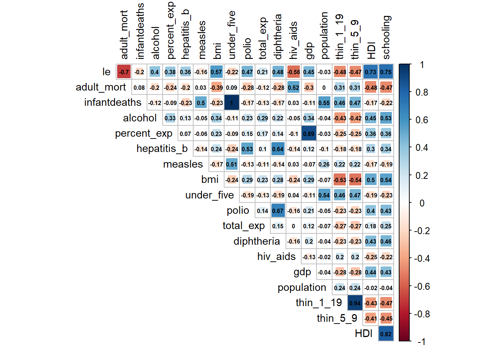
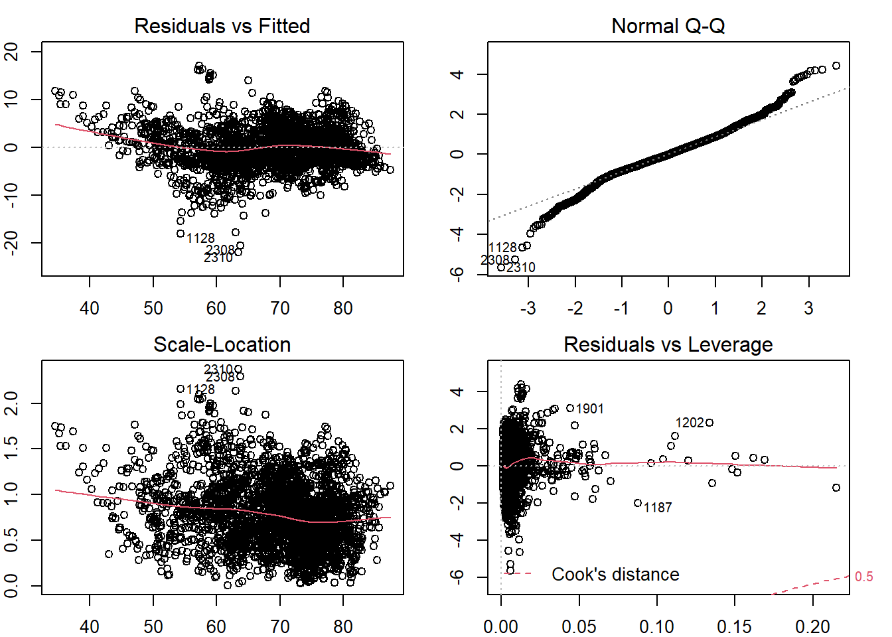
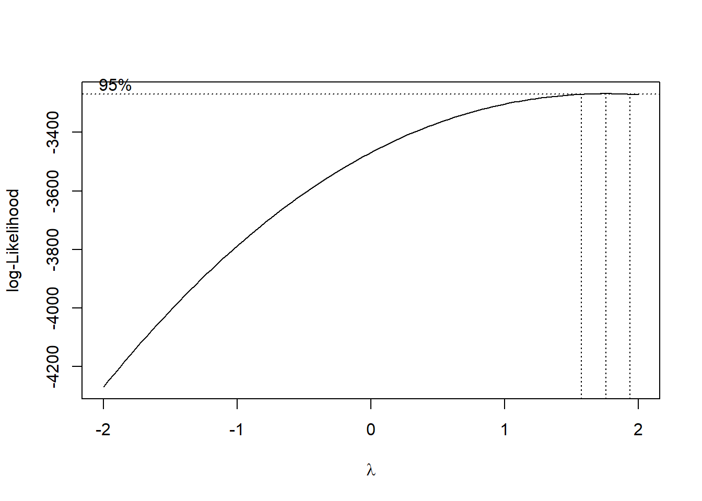
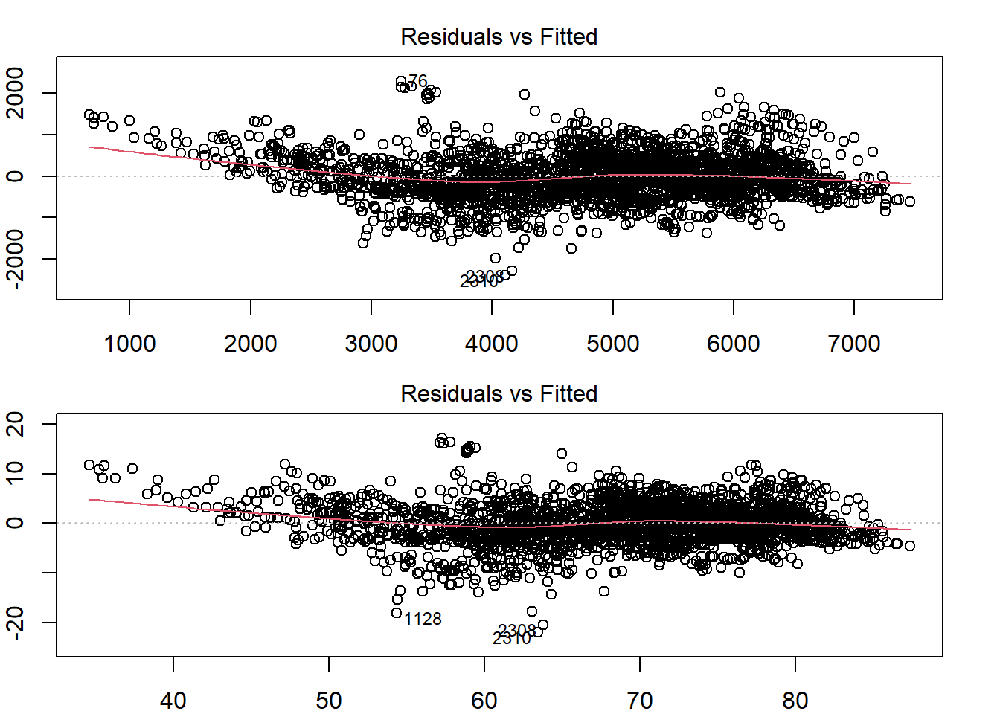
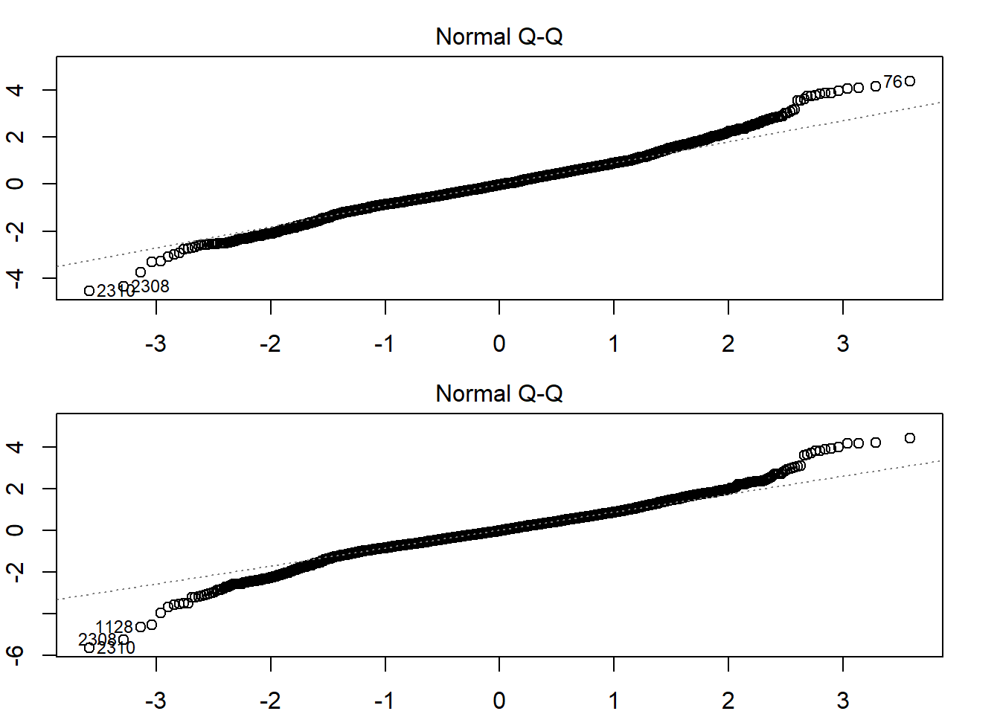
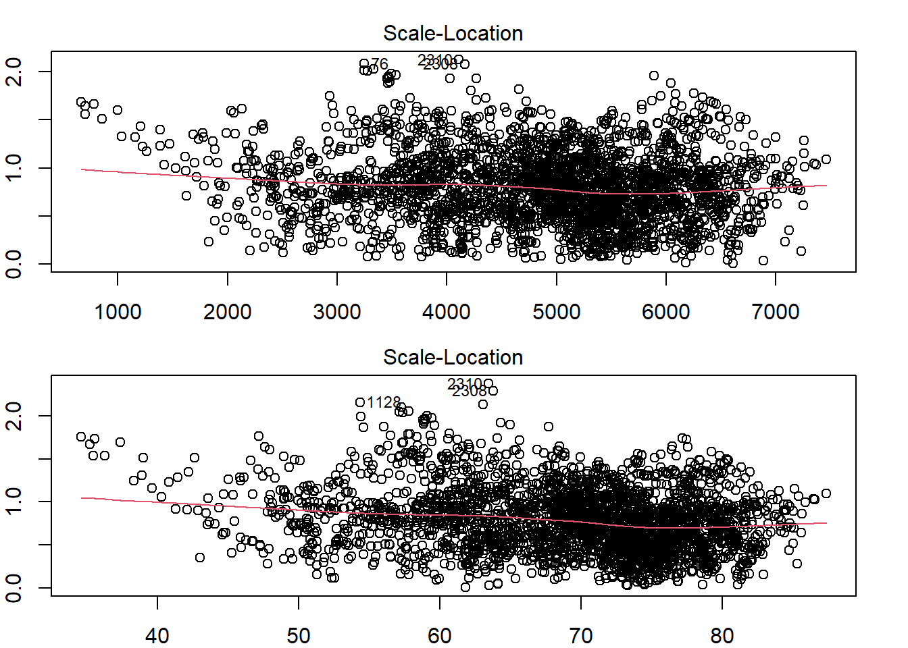
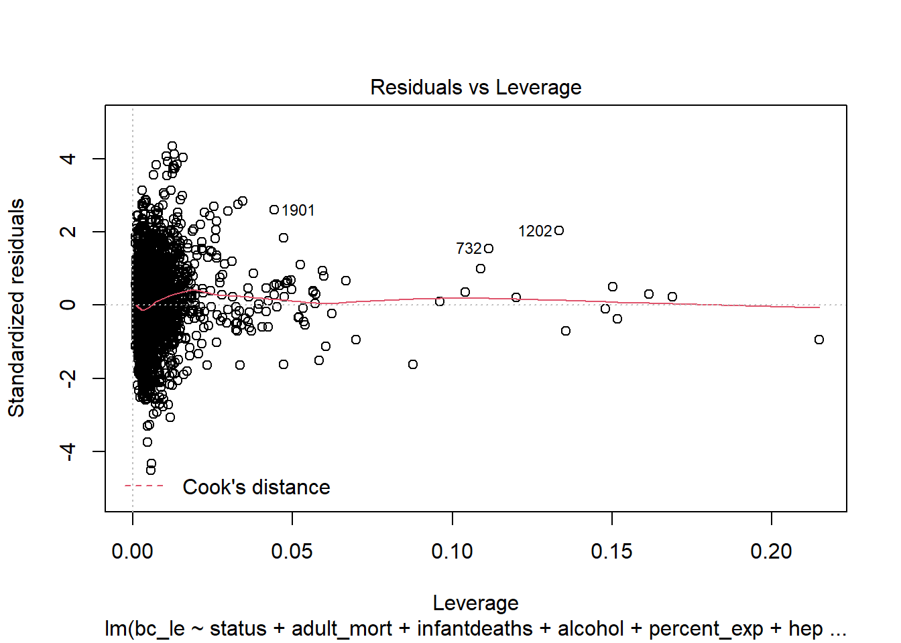
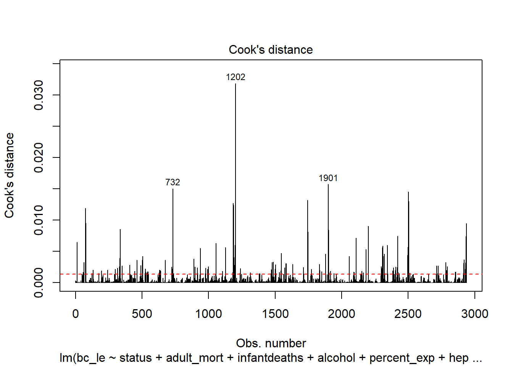
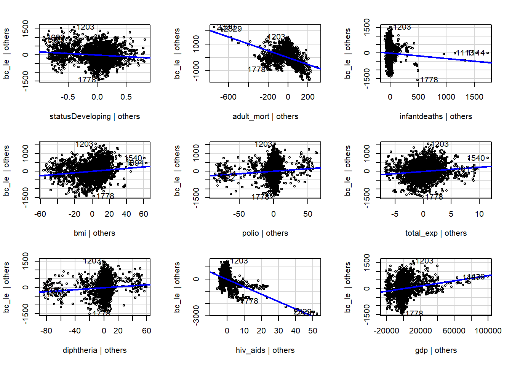
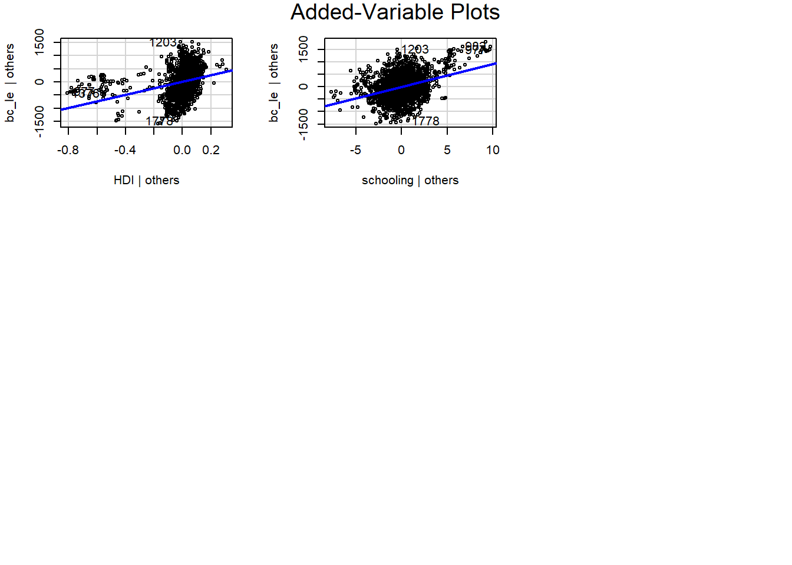

stepwise_model
library(tidyverse)## -- Attaching packages --------------------------------------- tidyverse 1.3.1 --## v ggplot2 3.3.5 v purrr 0.3.4
## v tibble 3.1.4 v dplyr 1.0.7
## v tidyr 1.1.3 v stringr 1.4.0
## v readr 2.0.1 v forcats 0.5.1## -- Conflicts ------------------------------------------ tidyverse_conflicts() --
## x dplyr::filter() masks stats::filter()
## x dplyr::lag() masks stats::lag()library(MASS)##
## Attaching package: 'MASS'## The following object is masked from 'package:dplyr':
##
## selectlibrary(corrplot)## corrplot 0.92 loadedlibrary(performance) # vif
library(caret)## Loading required package: lattice##
## Attaching package: 'caret'## The following object is masked from 'package:purrr':
##
## liftlibrary(car)## Loading required package: carData##
## Attaching package: 'car'## The following object is masked from 'package:dplyr':
##
## recode## The following object is masked from 'package:purrr':
##
## somelibrary(Metrics)##
## Attaching package: 'Metrics'## The following objects are masked from 'package:caret':
##
## precision, recall## The following objects are masked from 'package:performance':
##
## mae, mse, rmsele_df =
read_csv("./data/Complete_Data.CSV") %>%
rename("HDI" = "incomecompositionofresources", "percent_exp" = "percentageexpenditure", "total_exp" = "totalexpenditure", "le" = "lifeexpectancy", "adult_mort" = "adult_mortality", "thin_1_19" = "thinness1_19years", "thin_5_9" = "thinness5_9years", "under_five" = "under_fivedeaths")## Rows: 2938 Columns: 23## -- Column specification --------------------------------------------------------
## Delimiter: ","
## chr (3): country, continent, status
## dbl (20): year, lifeexpectancy, adult_mortality, infantdeaths, alcohol, perc...##
## i Use `spec()` to retrieve the full column specification for this data.
## i Specify the column types or set `show_col_types = FALSE` to quiet this message.Correlation Matrix
le_df =
le_df %>%
dplyr::select(-c(country,continent,year,status))
corrplot(cor(le_df), type = "upper", diag = FALSE, method = "square", addCoef.col = "black", number.cex = .5, tl.col = "black", tl.cex = .9)
le_df =
read_csv("./data/Complete_Data.CSV") %>%
rename("HDI" = "incomecompositionofresources", "percent_exp" = "percentageexpenditure", "total_exp" = "totalexpenditure", "le" = "lifeexpectancy", "adult_mort" = "adult_mortality", "thin_1_19" = "thinness1_19years", "thin_5_9" = "thinness5_9years", "under_five" = "under_fivedeaths")## Rows: 2938 Columns: 23## -- Column specification --------------------------------------------------------
## Delimiter: ","
## chr (3): country, continent, status
## dbl (20): year, lifeexpectancy, adult_mortality, infantdeaths, alcohol, perc...##
## i Use `spec()` to retrieve the full column specification for this data.
## i Specify the column types or set `show_col_types = FALSE` to quiet this message.Use diagnostic plots to check model
full_model = lm(le ~ status + adult_mort + infantdeaths + alcohol + percent_exp + hepatitis_b + measles + bmi + under_five + polio + total_exp + diphtheria + hiv_aids + gdp + population + thin_1_19 + thin_5_9 + HDI + schooling, data = le_df)
par(mfrow = c(2, 2))
par(mar = c(2,2,2,2))
#Residuals vs Fitted values Plot
plot(full_model, which = 1)
# QQ Plot
plot(full_model, which = 2)
# Scale-location plot
plot(full_model, which = 3)
# Residuals vs. Leverage
plot(full_model, which = 5)
par(mfrow = c(1, 1))
par(mar = c(3,3,3,3))Box-cox Transformation
bc = boxcox(full_model)
lambda = bc$x[which.max(bc$y)]
lambda## [1] 1.757576le_df =
le_df %>%
mutate(bc_le = (le)^2)
full_bc = lm(bc_le ~ status + adult_mort + infantdeaths + alcohol + percent_exp + hepatitis_b + measles + bmi + under_five + polio + total_exp + diphtheria + hiv_aids + gdp + population + thin_1_19 + thin_5_9 + HDI + schooling, data = le_df)
summary(full_bc)##
## Call:
## lm(formula = bc_le ~ status + adult_mort + infantdeaths + alcohol +
## percent_exp + hepatitis_b + measles + bmi + under_five +
## polio + total_exp + diphtheria + hiv_aids + gdp + population +
## thin_1_19 + thin_5_9 + HDI + schooling, data = le_df)
##
## Residuals:
## Min 1Q Median 3Q Max
## -2388.67 -326.13 -16.36 312.06 2287.63
##
## Coefficients:
## Estimate Std. Error t value Pr(>|t|)
## (Intercept) 3.231e+03 8.090e+01 39.933 < 2e-16 ***
## statusDeveloping -2.564e+02 3.544e+01 -7.234 5.98e-13 ***
## adult_mort -2.255e+00 1.058e-01 -21.304 < 2e-16 ***
## infantdeaths 1.140e+01 1.098e+00 10.376 < 2e-16 ***
## alcohol 2.996e+00 3.328e+00 0.900 0.368000
## percent_exp 1.044e-02 1.093e-02 0.955 0.339703
## hepatitis_b 2.159e-01 4.863e-01 0.444 0.656995
## measles 8.814e-04 1.004e-03 0.878 0.379931
## bmi 4.788e+00 6.463e-01 7.409 1.65e-13 ***
## under_five -8.521e+00 8.052e-01 -10.582 < 2e-16 ***
## polio 3.171e+00 5.818e-01 5.450 5.45e-08 ***
## total_exp 9.301e+00 4.267e+00 2.180 0.029365 *
## diphtheria 2.482e+00 6.403e-01 3.877 0.000108 ***
## hiv_aids -5.697e+01 2.296e+00 -24.811 < 2e-16 ***
## gdp 7.985e-03 1.677e-03 4.760 2.03e-06 ***
## population -5.657e-08 2.171e-07 -0.261 0.794449
## thin_1_19 -6.579e+00 6.344e+00 -1.037 0.299834
## thin_5_9 -7.728e+00 6.266e+00 -1.233 0.217528
## HDI 8.677e+02 8.146e+01 10.651 < 2e-16 ***
## schooling 9.111e+01 5.320e+00 17.125 < 2e-16 ***
## ---
## Signif. codes: 0 '***' 0.001 '**' 0.01 '*' 0.05 '.' 0.1 ' ' 1
##
## Residual standard error: 529.4 on 2918 degrees of freedom
## Multiple R-squared: 0.8258, Adjusted R-squared: 0.8246
## F-statistic: 727.9 on 19 and 2918 DF, p-value: < 2.2e-16full = lm(le ~ status + adult_mort + infantdeaths + alcohol + percent_exp + hepatitis_b + measles + bmi + under_five + polio + total_exp + diphtheria + hiv_aids + gdp + population + thin_1_19 + thin_5_9 + HDI + schooling, data = le_df)
summary(full)##
## Call:
## lm(formula = le ~ status + adult_mort + infantdeaths + alcohol +
## percent_exp + hepatitis_b + measles + bmi + under_five +
## polio + total_exp + diphtheria + hiv_aids + gdp + population +
## thin_1_19 + thin_5_9 + HDI + schooling, data = le_df)
##
## Residuals:
## Min 1Q Median 3Q Max
## -21.9455 -2.2587 -0.0609 2.2686 17.1287
##
## Coefficients:
## Estimate Std. Error t value Pr(>|t|)
## (Intercept) 5.625e+01 5.967e-01 94.270 < 2e-16 ***
## statusDeveloping -1.353e+00 2.614e-01 -5.178 2.40e-07 ***
## adult_mort -1.698e-02 7.805e-04 -21.755 < 2e-16 ***
## infantdeaths 1.003e-01 8.100e-03 12.377 < 2e-16 ***
## alcohol 2.598e-02 2.454e-02 1.058 0.290
## percent_exp 5.674e-05 8.063e-05 0.704 0.482
## hepatitis_b 4.009e-03 3.586e-03 1.118 0.264
## measles 2.739e-06 7.402e-06 0.370 0.711
## bmi 3.915e-02 4.766e-03 8.214 3.18e-16 ***
## under_five -7.490e-02 5.939e-03 -12.612 < 2e-16 ***
## polio 2.455e-02 4.291e-03 5.722 1.16e-08 ***
## total_exp 4.187e-02 3.147e-02 1.330 0.183
## diphtheria 1.912e-02 4.722e-03 4.050 5.26e-05 ***
## hiv_aids -4.957e-01 1.693e-02 -29.273 < 2e-16 ***
## gdp 4.875e-05 1.237e-05 3.941 8.32e-05 ***
## population -4.742e-10 1.601e-09 -0.296 0.767
## thin_1_19 -5.895e-02 4.679e-02 -1.260 0.208
## thin_5_9 -2.425e-02 4.621e-02 -0.525 0.600
## HDI 6.391e+00 6.008e-01 10.638 < 2e-16 ***
## schooling 6.880e-01 3.924e-02 17.533 < 2e-16 ***
## ---
## Signif. codes: 0 '***' 0.001 '**' 0.01 '*' 0.05 '.' 0.1 ' ' 1
##
## Residual standard error: 3.904 on 2918 degrees of freedom
## Multiple R-squared: 0.8328, Adjusted R-squared: 0.8317
## F-statistic: 764.8 on 19 and 2918 DF, p-value: < 2.2e-16par(mfrow = c(2, 1))
par(mar = c(2,2,2,2))
plot(full_bc, which = 1)
plot(full, which = 1)
plot(full_bc, which = 2)
plot(full, which = 2)
plot(full_bc, which = 3)
plot(full, which = 3)
plot(full_bc, which = 5)
plot(full, which = 5)
par(mfrow = c(1, 1))
par(mar = c(3,3,3,3))Identify influentical observations
plot(full_bc, which = 5)
# Identify influential observations using Cook's distance
cutoff <- 4/nrow(le_df)
plot(full_bc, which = 4, cook.levels = cutoff)
abline(h = cutoff, lty = 2, col = "red")
cook = cooks.distance(full_bc)
influential_obs = as.numeric(names(cook)[(cook > cutoff)])
#define new data frame with influential points removed
no_influ_le = le_df[-influential_obs, ]
no_influ_full_bc = lm(bc_le ~ status + adult_mort + infantdeaths + alcohol + percent_exp + hepatitis_b + measles + bmi + under_five + polio + total_exp + diphtheria + hiv_aids + gdp + population + thin_1_19 + thin_5_9 + HDI + schooling, data = no_influ_le)
summary(no_influ_full_bc)##
## Call:
## lm(formula = bc_le ~ status + adult_mort + infantdeaths + alcohol +
## percent_exp + hepatitis_b + measles + bmi + under_five +
## polio + total_exp + diphtheria + hiv_aids + gdp + population +
## thin_1_19 + thin_5_9 + HDI + schooling, data = no_influ_le)
##
## Residuals:
## Min 1Q Median 3Q Max
## -1361.43 -276.29 -16.39 283.48 1521.74
##
## Coefficients:
## Estimate Std. Error t value Pr(>|t|)
## (Intercept) 3.101e+03 7.411e+01 41.846 < 2e-16 ***
## statusDeveloping -1.989e+02 3.018e+01 -6.590 5.25e-11 ***
## adult_mort -2.492e+00 9.743e-02 -25.578 < 2e-16 ***
## infantdeaths 1.096e+01 1.100e+00 9.967 < 2e-16 ***
## alcohol -3.677e+00 2.860e+00 -1.286 0.198690
## percent_exp 9.244e-03 9.251e-03 0.999 0.317782
## hepatitis_b 2.182e-01 4.297e-01 0.508 0.611735
## measles 1.409e-03 9.790e-04 1.439 0.150323
## bmi 3.447e+00 5.602e-01 6.154 8.68e-10 ***
## under_five -8.315e+00 8.072e-01 -10.301 < 2e-16 ***
## polio 2.698e+00 5.256e-01 5.133 3.05e-07 ***
## total_exp 2.336e+01 3.723e+00 6.276 4.04e-10 ***
## diphtheria 2.139e+00 5.810e-01 3.681 0.000236 ***
## hiv_aids -5.897e+01 2.343e+00 -25.166 < 2e-16 ***
## gdp 6.806e-03 1.415e-03 4.808 1.61e-06 ***
## population 3.680e-08 2.414e-07 0.152 0.878882
## thin_1_19 -3.957e+00 5.606e+00 -0.706 0.480368
## thin_5_9 -7.256e+00 5.527e+00 -1.313 0.189369
## HDI 1.157e+03 7.546e+01 15.334 < 2e-16 ***
## schooling 8.948e+01 4.890e+00 18.301 < 2e-16 ***
## ---
## Signif. codes: 0 '***' 0.001 '**' 0.01 '*' 0.05 '.' 0.1 ' ' 1
##
## Residual standard error: 433.7 on 2721 degrees of freedom
## Multiple R-squared: 0.8675, Adjusted R-squared: 0.8666
## F-statistic: 938 on 19 and 2721 DF, p-value: < 2.2e-16Leverage checking
# compare models with and without influential observations
no_influ_full_bc = lm(bc_le ~ status + adult_mort + infantdeaths + alcohol + percent_exp + hepatitis_b + measles + bmi + under_five + polio + total_exp + diphtheria + hiv_aids + gdp + population + thin_1_19 + thin_5_9 + HDI + schooling, data = no_influ_le)
summary(no_influ_full_bc)##
## Call:
## lm(formula = bc_le ~ status + adult_mort + infantdeaths + alcohol +
## percent_exp + hepatitis_b + measles + bmi + under_five +
## polio + total_exp + diphtheria + hiv_aids + gdp + population +
## thin_1_19 + thin_5_9 + HDI + schooling, data = no_influ_le)
##
## Residuals:
## Min 1Q Median 3Q Max
## -1361.43 -276.29 -16.39 283.48 1521.74
##
## Coefficients:
## Estimate Std. Error t value Pr(>|t|)
## (Intercept) 3.101e+03 7.411e+01 41.846 < 2e-16 ***
## statusDeveloping -1.989e+02 3.018e+01 -6.590 5.25e-11 ***
## adult_mort -2.492e+00 9.743e-02 -25.578 < 2e-16 ***
## infantdeaths 1.096e+01 1.100e+00 9.967 < 2e-16 ***
## alcohol -3.677e+00 2.860e+00 -1.286 0.198690
## percent_exp 9.244e-03 9.251e-03 0.999 0.317782
## hepatitis_b 2.182e-01 4.297e-01 0.508 0.611735
## measles 1.409e-03 9.790e-04 1.439 0.150323
## bmi 3.447e+00 5.602e-01 6.154 8.68e-10 ***
## under_five -8.315e+00 8.072e-01 -10.301 < 2e-16 ***
## polio 2.698e+00 5.256e-01 5.133 3.05e-07 ***
## total_exp 2.336e+01 3.723e+00 6.276 4.04e-10 ***
## diphtheria 2.139e+00 5.810e-01 3.681 0.000236 ***
## hiv_aids -5.897e+01 2.343e+00 -25.166 < 2e-16 ***
## gdp 6.806e-03 1.415e-03 4.808 1.61e-06 ***
## population 3.680e-08 2.414e-07 0.152 0.878882
## thin_1_19 -3.957e+00 5.606e+00 -0.706 0.480368
## thin_5_9 -7.256e+00 5.527e+00 -1.313 0.189369
## HDI 1.157e+03 7.546e+01 15.334 < 2e-16 ***
## schooling 8.948e+01 4.890e+00 18.301 < 2e-16 ***
## ---
## Signif. codes: 0 '***' 0.001 '**' 0.01 '*' 0.05 '.' 0.1 ' ' 1
##
## Residual standard error: 433.7 on 2721 degrees of freedom
## Multiple R-squared: 0.8675, Adjusted R-squared: 0.8666
## F-statistic: 938 on 19 and 2721 DF, p-value: < 2.2e-16full_bc = lm(bc_le ~ status + adult_mort + infantdeaths + alcohol + percent_exp + hepatitis_b + measles + bmi + under_five + polio + total_exp + diphtheria + hiv_aids + gdp + population + thin_1_19 + thin_5_9 + HDI + schooling, data = le_df)
summary(full_bc)##
## Call:
## lm(formula = bc_le ~ status + adult_mort + infantdeaths + alcohol +
## percent_exp + hepatitis_b + measles + bmi + under_five +
## polio + total_exp + diphtheria + hiv_aids + gdp + population +
## thin_1_19 + thin_5_9 + HDI + schooling, data = le_df)
##
## Residuals:
## Min 1Q Median 3Q Max
## -2388.67 -326.13 -16.36 312.06 2287.63
##
## Coefficients:
## Estimate Std. Error t value Pr(>|t|)
## (Intercept) 3.231e+03 8.090e+01 39.933 < 2e-16 ***
## statusDeveloping -2.564e+02 3.544e+01 -7.234 5.98e-13 ***
## adult_mort -2.255e+00 1.058e-01 -21.304 < 2e-16 ***
## infantdeaths 1.140e+01 1.098e+00 10.376 < 2e-16 ***
## alcohol 2.996e+00 3.328e+00 0.900 0.368000
## percent_exp 1.044e-02 1.093e-02 0.955 0.339703
## hepatitis_b 2.159e-01 4.863e-01 0.444 0.656995
## measles 8.814e-04 1.004e-03 0.878 0.379931
## bmi 4.788e+00 6.463e-01 7.409 1.65e-13 ***
## under_five -8.521e+00 8.052e-01 -10.582 < 2e-16 ***
## polio 3.171e+00 5.818e-01 5.450 5.45e-08 ***
## total_exp 9.301e+00 4.267e+00 2.180 0.029365 *
## diphtheria 2.482e+00 6.403e-01 3.877 0.000108 ***
## hiv_aids -5.697e+01 2.296e+00 -24.811 < 2e-16 ***
## gdp 7.985e-03 1.677e-03 4.760 2.03e-06 ***
## population -5.657e-08 2.171e-07 -0.261 0.794449
## thin_1_19 -6.579e+00 6.344e+00 -1.037 0.299834
## thin_5_9 -7.728e+00 6.266e+00 -1.233 0.217528
## HDI 8.677e+02 8.146e+01 10.651 < 2e-16 ***
## schooling 9.111e+01 5.320e+00 17.125 < 2e-16 ***
## ---
## Signif. codes: 0 '***' 0.001 '**' 0.01 '*' 0.05 '.' 0.1 ' ' 1
##
## Residual standard error: 529.4 on 2918 degrees of freedom
## Multiple R-squared: 0.8258, Adjusted R-squared: 0.8246
## F-statistic: 727.9 on 19 and 2918 DF, p-value: < 2.2e-16# remove insignificant variables
new_full_bc = lm(bc_le ~ status + adult_mort + infantdeaths + bmi + under_five + polio + total_exp + diphtheria + hiv_aids + gdp + HDI + schooling, data = no_influ_le)
summary(new_full_bc)##
## Call:
## lm(formula = bc_le ~ status + adult_mort + infantdeaths + bmi +
## under_five + polio + total_exp + diphtheria + hiv_aids +
## gdp + HDI + schooling, data = no_influ_le)
##
## Residuals:
## Min 1Q Median 3Q Max
## -1362.51 -277.51 -19.77 294.78 1533.75
##
## Coefficients:
## Estimate Std. Error t value Pr(>|t|)
## (Intercept) 3.002e+03 6.890e+01 43.572 < 2e-16 ***
## statusDeveloping -1.994e+02 2.755e+01 -7.238 5.91e-13 ***
## adult_mort -2.509e+00 9.640e-02 -26.031 < 2e-16 ***
## infantdeaths 1.068e+01 1.074e+00 9.947 < 2e-16 ***
## bmi 4.180e+00 5.235e-01 7.985 2.05e-15 ***
## under_five -8.144e+00 7.914e-01 -10.291 < 2e-16 ***
## polio 2.648e+00 5.204e-01 5.088 3.86e-07 ***
## total_exp 2.510e+01 3.649e+00 6.877 7.53e-12 ***
## diphtheria 2.244e+00 5.217e-01 4.301 1.76e-05 ***
## hiv_aids -5.988e+01 2.332e+00 -25.680 < 2e-16 ***
## gdp 8.074e-03 7.571e-04 10.665 < 2e-16 ***
## HDI 1.156e+03 7.517e+01 15.375 < 2e-16 ***
## schooling 9.029e+01 4.757e+00 18.980 < 2e-16 ***
## ---
## Signif. codes: 0 '***' 0.001 '**' 0.01 '*' 0.05 '.' 0.1 ' ' 1
##
## Residual standard error: 434.9 on 2728 degrees of freedom
## Multiple R-squared: 0.8665, Adjusted R-squared: 0.8659
## F-statistic: 1476 on 12 and 2728 DF, p-value: < 2.2e-16Multi-collinearity
check_collinearity(new_full_bc)## # Check for Multicollinearity
##
## Low Correlation
##
## Term VIF Increased SE Tolerance
## status 1.60 1.27 0.62
## adult_mort 1.90 1.38 0.53
## bmi 1.57 1.25 0.64
## polio 1.97 1.40 0.51
## total_exp 1.18 1.09 0.85
## diphtheria 2.01 1.42 0.50
## hiv_aids 1.42 1.19 0.71
## gdp 1.43 1.20 0.70
## HDI 3.47 1.86 0.29
## schooling 3.79 1.95 0.26
##
## High Correlation
##
## Term VIF Increased SE Tolerance
## infantdeaths 127.29 11.28 0.01
## under_five 128.88 11.35 0.01# remove high correlation variables (under_five)
final_full = lm(bc_le ~ status + adult_mort + infantdeaths + bmi + polio + total_exp + diphtheria + hiv_aids + gdp + HDI + schooling, data = no_influ_le)
check_collinearity(final_full)## # Check for Multicollinearity
##
## Low Correlation
##
## Term VIF Increased SE Tolerance
## status 1.59 1.26 0.63
## adult_mort 1.90 1.38 0.53
## infantdeaths 1.10 1.05 0.91
## bmi 1.57 1.25 0.64
## polio 1.97 1.40 0.51
## total_exp 1.18 1.09 0.85
## diphtheria 1.99 1.41 0.50
## hiv_aids 1.41 1.19 0.71
## gdp 1.42 1.19 0.70
## HDI 3.43 1.85 0.29
## schooling 3.79 1.95 0.26summary(final_full)##
## Call:
## lm(formula = bc_le ~ status + adult_mort + infantdeaths + bmi +
## polio + total_exp + diphtheria + hiv_aids + gdp + HDI + schooling,
## data = no_influ_le)
##
## Residuals:
## Min 1Q Median 3Q Max
## -1437.98 -284.36 -19.41 299.76 1534.17
##
## Coefficients:
## Estimate Std. Error t value Pr(>|t|)
## (Intercept) 2.872e+03 6.901e+01 41.611 < 2e-16 ***
## statusDeveloping -1.761e+02 2.798e+01 -6.296 3.55e-10 ***
## adult_mort -2.561e+00 9.810e-02 -26.109 < 2e-16 ***
## infantdeaths -3.215e-01 1.017e-01 -3.162 0.00158 **
## bmi 4.113e+00 5.334e-01 7.712 1.73e-14 ***
## polio 2.851e+00 5.299e-01 5.379 8.12e-08 ***
## total_exp 2.436e+01 3.718e+00 6.552 6.78e-11 ***
## diphtheria 2.788e+00 5.289e-01 5.270 1.47e-07 ***
## hiv_aids -6.172e+01 2.369e+00 -26.052 < 2e-16 ***
## gdp 7.596e-03 7.700e-04 9.865 < 2e-16 ***
## HDI 1.241e+03 7.614e+01 16.304 < 2e-16 ***
## schooling 9.114e+01 4.847e+00 18.802 < 2e-16 ***
## ---
## Signif. codes: 0 '***' 0.001 '**' 0.01 '*' 0.05 '.' 0.1 ' ' 1
##
## Residual standard error: 443.2 on 2729 degrees of freedom
## Multiple R-squared: 0.8613, Adjusted R-squared: 0.8608
## F-statistic: 1541 on 11 and 2729 DF, p-value: < 2.2e-16Model Validation
set.seed(1)
# Use 5-fold validation and create the training sets
train = trainControl(method = "cv", number = 5)
# Fit the 4-variables model
model = train(bc_le ~ . -continent - country - year, data = no_influ_le, trControl = train, method = 'lm', na.action = na.pass)
model$finalModel##
## Call:
## lm(formula = .outcome ~ ., data = dat)
##
## Coefficients:
## (Intercept) statusDeveloping le adult_mort
## -4.531e+03 -6.753e+01 1.372e+02 1.061e-01
## infantdeaths alcohol percent_exp hepatitis_b
## -2.547e+00 -8.059e-01 2.563e-03 -1.802e-01
## measles bmi under_five polio
## 5.469e-04 -2.297e-01 1.922e+00 -1.138e-01
## total_exp diphtheria hiv_aids gdp
## 2.529e+00 -1.712e-01 1.108e+01 1.347e-03
## population thin_1_19 thin_5_9 HDI
## -3.866e-08 1.765e+00 -3.900e+00 -2.872e+00
## schooling
## -3.466e+00print(model)## Linear Regression
##
## 2741 samples
## 23 predictor
##
## No pre-processing
## Resampling: Cross-Validated (5 fold)
## Summary of sample sizes: 2193, 2194, 2192, 2193, 2192
## Resampling results:
##
## RMSE Rsquared MAE
## 64.53057 0.9970446 45.56737
##
## Tuning parameter 'intercept' was held constant at a value of TRUEnormalized RMSE
rmse = model$results$RMSE / (max(no_influ_le$bc_le) - min(no_influ_le$bc_le))
rmse## [1] 0.01064266Added variable plot
avPlots(final_full)